来源：https://y8ua8lkzq5.feishu.cn/docx/EIYsdpCzao4XAaxxc9UcHHJgnsh
随着个性化和文化消费升级,手工饰品满足了消费者对非均质化产品的需求,拥有广阔的市场前景。盈利模式多样，可以通过电商销售、策划服务、教学培训等多种方式实现盈利,商业化变现路径清晰。技术门槛不高，部分手工饰品的技术学习门槛不高,容易上手。成本控制可行，小批量生产可以有效控制成本支出。用户粘性强，手工饰品富有情感价值,用户粘性和重复购买率高。小红书手工饰品创业具有广阔市场前景、多样盈利模式等优势,是值得推荐的创业方向。
在小红书上【手工】话题下的浏览量高达180.7亿，而【手工饰品】话题下的浏览量为2.7亿。
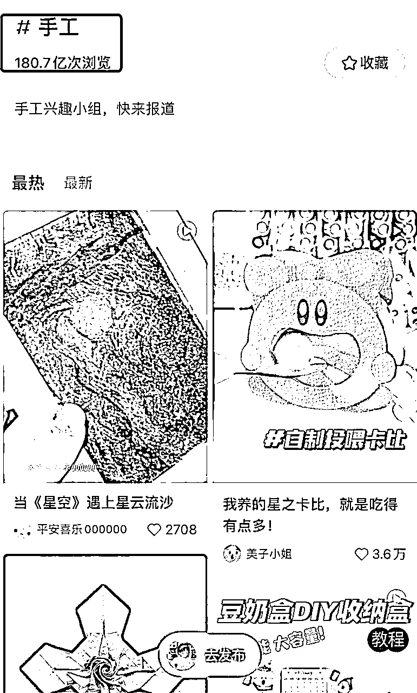
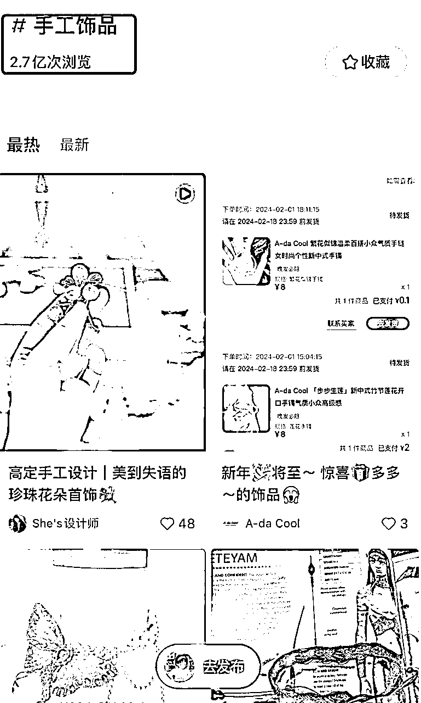
手工饰品完全依靠人工手艺制作完成,而非机器批量生产，具有独特性，强调个人化、独特性和考究的工艺,能够满足消费者对个性和质感的追求,是很受欢迎的饰品形式。和小红书用户群体相匹配，需求量很大。
1. 有一定手工制作技能的人
有编织、钩织、串珠等手工制作技艺基础,可以独立完成产品制作。
2. 对手工艺品设计感兴趣的人
对手工艺和设计领域感兴趣,有一定的审美和创意能力。
3. 熟悉小红书的运营者
了解小红书的运营模式,知晓如何进行内容运营。
4. 有一定文字和摄影能力的人
能够撰写产品文案,拍摄产品图片。
5. 有一定美工编辑技能的人
可以对产品图片、视频进行后期编辑加工。
6. 对电商和新媒体营销感兴趣的人
愿意学习新媒体电商转化的知识和技巧。
总体来说,有手工技能、新媒体运营基础,且具备一定创业精神和资源的人群比较适合这个项目。
手工饰品的分类非常的广，可以根据自己的兴趣和擅长的方向选择。
手工饰品可以分为以下几类：
确定好细分领域后，就需要对账号进行定位和包装了。
在小红书上做手工饰品,昵称的取名可以从以下几个方面考虑:
例如“小溪手作坊”“椿木手工吧”“YY手织工作室”等,使用“手工”“手作”等词,突出手工特征。
例如“糖朵手饰”“公主手工屋”“小碎花工房”等,使用描述品牌风格的词汇。
例如“沫珂作坊”“Lily Handmade”“Hazel工坊”等,使用具有意义的名字,增加识记度。
例如“浙江杭州咏字巷手工坊”“成都悠悠手作”等,突出产地特色。
例如“B12手工店”“YU56手作屋”等,简洁大方。
例如“木兰手作”“印花手绘”“枫木编织”等,突出设计风格。
例如“杨小宝的手工世界”“Linda手作屋”等,增加亲切感。
例如“幸福旺旺手工”“小蜜蜂手作坊”等,增加趣味性。
整体来说,取一个简洁大方、能反映品牌属性,同时富有创造性的昵称,能让用户更记住你的品牌。
在小红书上做手工饰品,账号的背景和头像是重要的品牌识别元素,可以考虑以下方法:
总之,背景和头像在视觉上要突出手工和品牌特点,同时要考虑简洁与新颖的平衡。加强品牌识别度。
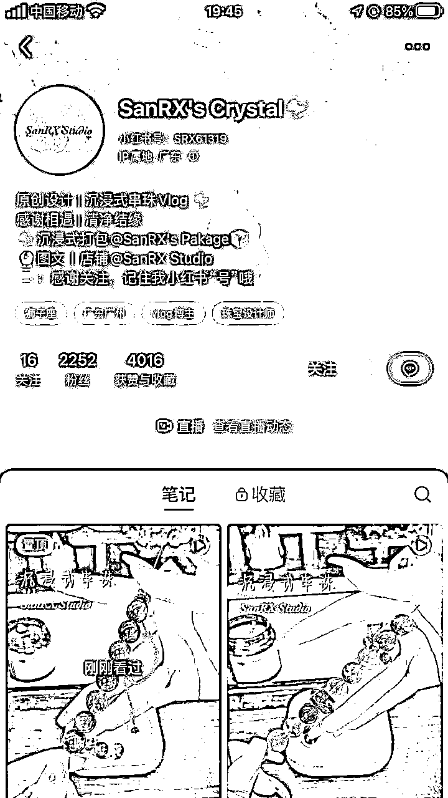
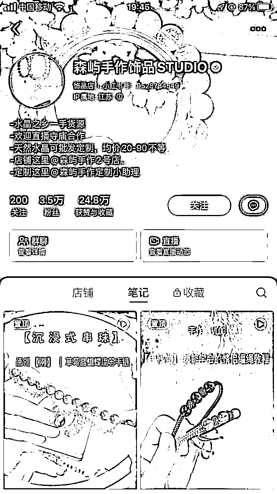
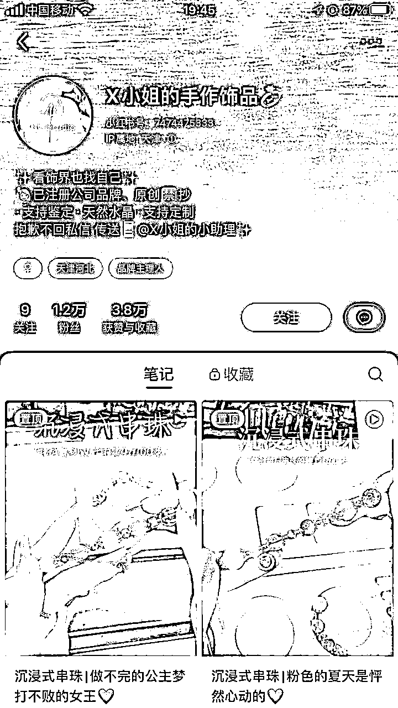
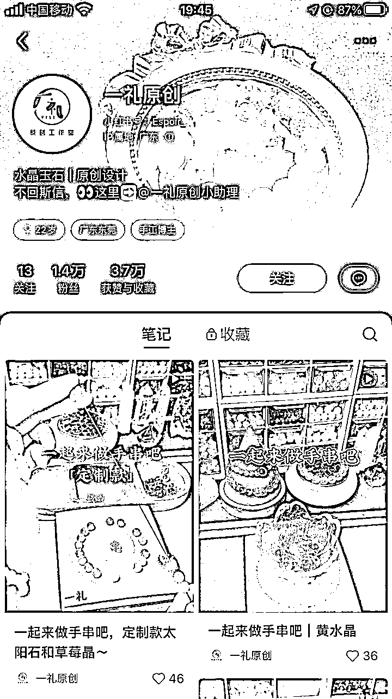
小红书上做手工饰品的账号,可以从以下几个方面来写个人简介:
例如:“椿木匠人Ami的手工饰品屋”
例如:主营古典优雅风珠宝配饰,注重传统工艺和高品质原材料。
例如:10年手工编织经验,擅长高难度编织工艺。
例如:秉承祖传古法,与机器生产绝不妥协。
例如:为每一位用户提供贴心订制,选择无忧。
例如:作品多次入选国际手工大赛,深受海内外顾客喜爱。
example:联系我获取更多手作信息或订制你的专属配饰。
总之,通过个人简介让用户对你的品牌及产品有整体印象,并提供联系方式促成业务转化。
确定好自己的细分领域后，找对标账号，模仿标题内容，以下是火过的内容：
内容有视频和图文两种形式。视频主要是展现手工饰品的做成过程，图文主要是展示成品。
接下来，我主要拆解几个手工饰品的账号，给大家参考。
在小红书上进行获客引流可以考虑以下几点:
把小红书ID设置成自己的微信号，在个人简介里放上联系自己的方式。
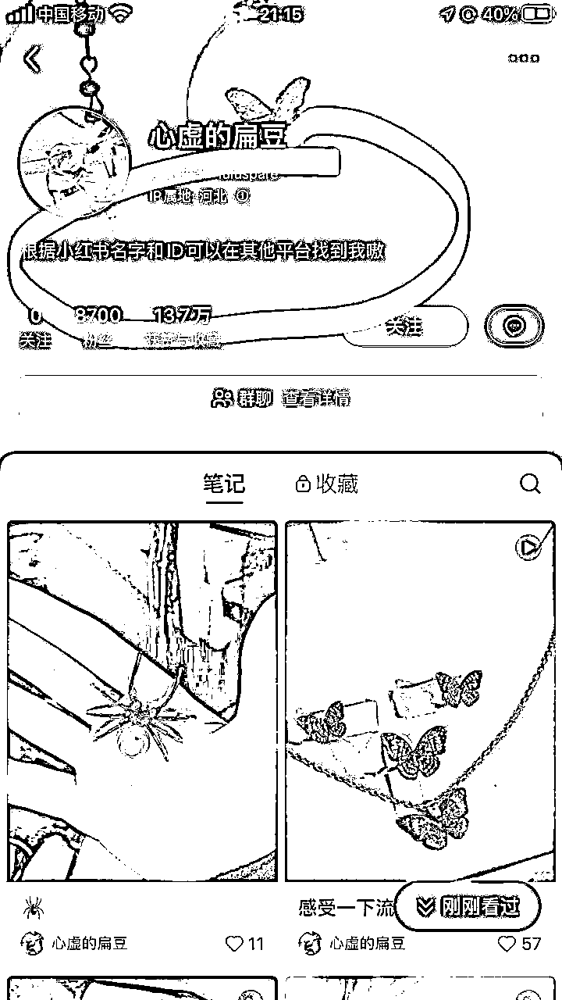
开聚光投流，会有“立刻咨询”的点击框，并可以在评论区引导。
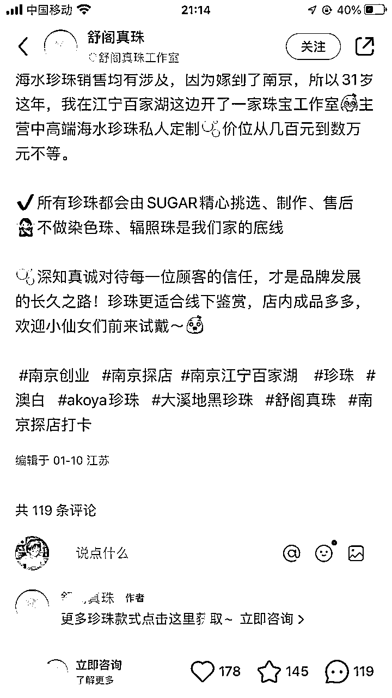
在个人简介这里@自己的小号
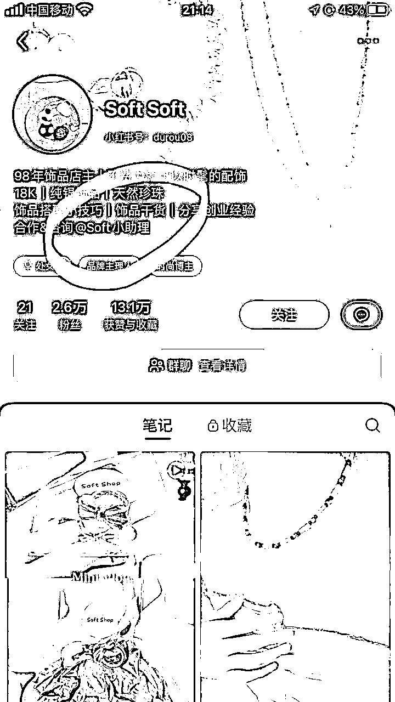
针对想做副业、创业的人群做公益讲解活动的直播。
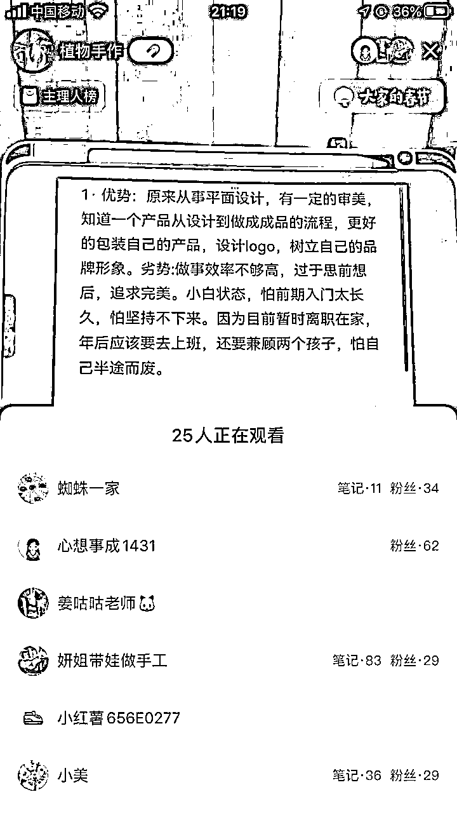
做个低价1元购的创业工业课链接。
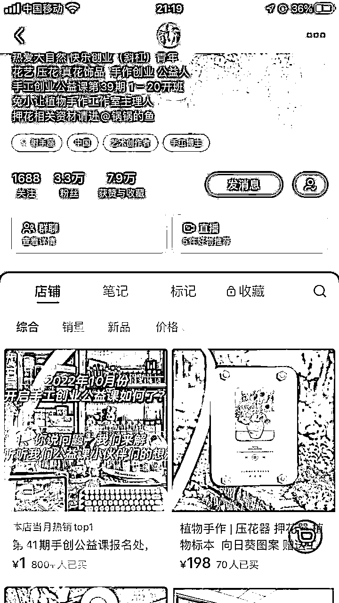
最大的是时间成本，前期可以自己在B站找相关的教学视频学习，或者是报课学习，边实践边输出内容
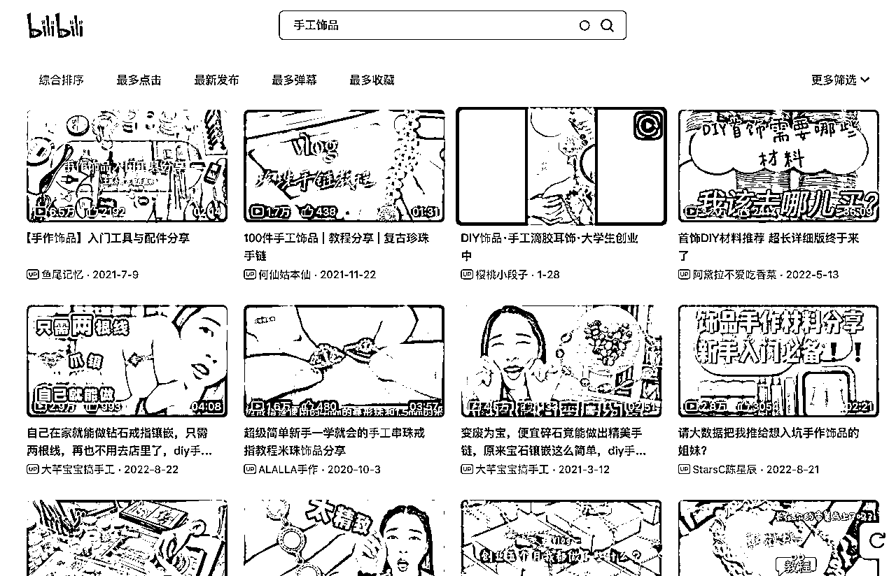
1.从产品创新角度讲，现在小红书各类细分领域的产品还蛮多的，需要有有竞争力和优势的产品。笔记图和产品要尽量保证一致，以免会有消费者的投诉。
2.从版权的角度讲，有的产品是有版权的，不能随意的抄袭和搬运图，以免原创作者的投诉。包括自己有设计出产品，也要保护自身知识产权,防止作品设计被抄袭。
3.从产品研发的角度来讲，手工饰品产品迭代周期相对较长,需要提前准备物料库存。
4.从产品的变现角度讲，粉丝数量和内容传播范围需要一个积累过程，借助网红或品牌合作可以快速获得流量红利，但要控制商业推广投放比例,保证内容的原创度。
5.从盈亏平衡周期，预估一个合理的达到销售盈亏平衡的时间节点，制定费用支出规划,控制投入风险，盈亏平衡后要持续优化运营,扩大利润率。